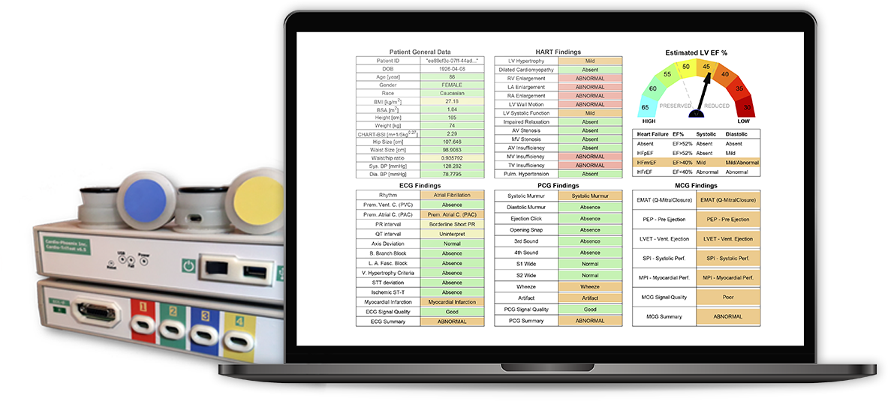

Increased diagnostic performance
Helping physicians to diagnose the early onset of CVD´s including Heart Failure and valvular diseases with unmatched precision and accuracy from day one
on patient presentation to Primary Care.
Explore CHART
